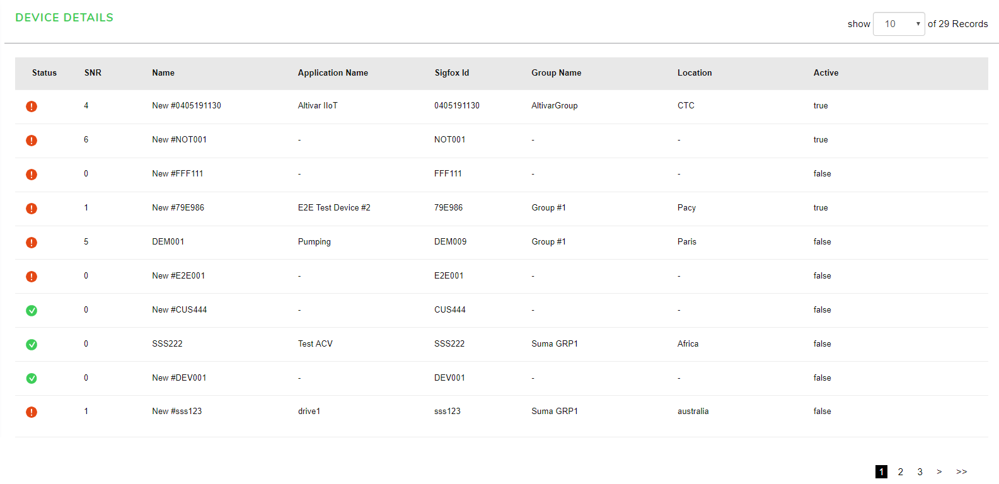

The Chart component control allows you to represent data visually in web applications. Depending on the type of data you need to display, you can represent your data as Bars, Columns, Line, Donut, Scattered points or even display them in multiple chart types.
Chart manages the underlying complexities inherent in a chart control completely, allowing developers to concentrate on important application specific tasks.
This section describes how to add a Chart control to your application and add data to it.
{{mapselector}}
{{mapModel | json}}